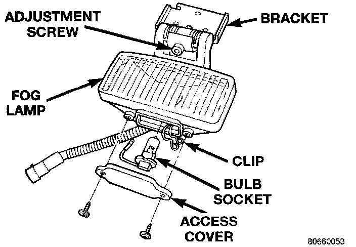

Fog/Driving Lamp: Service and Repair
REMOVALFog Lamp:

1. Remove adjustment screw.
2. Disengage fog lamp electrical connector.
3. Separate fog lamp from vehicle.
INSTALLATION
1. Position fog lamp at vehicle.
2. Engage fog lamp electrical connector.
3. Install adjustment screw.
4. Align fog lamp.